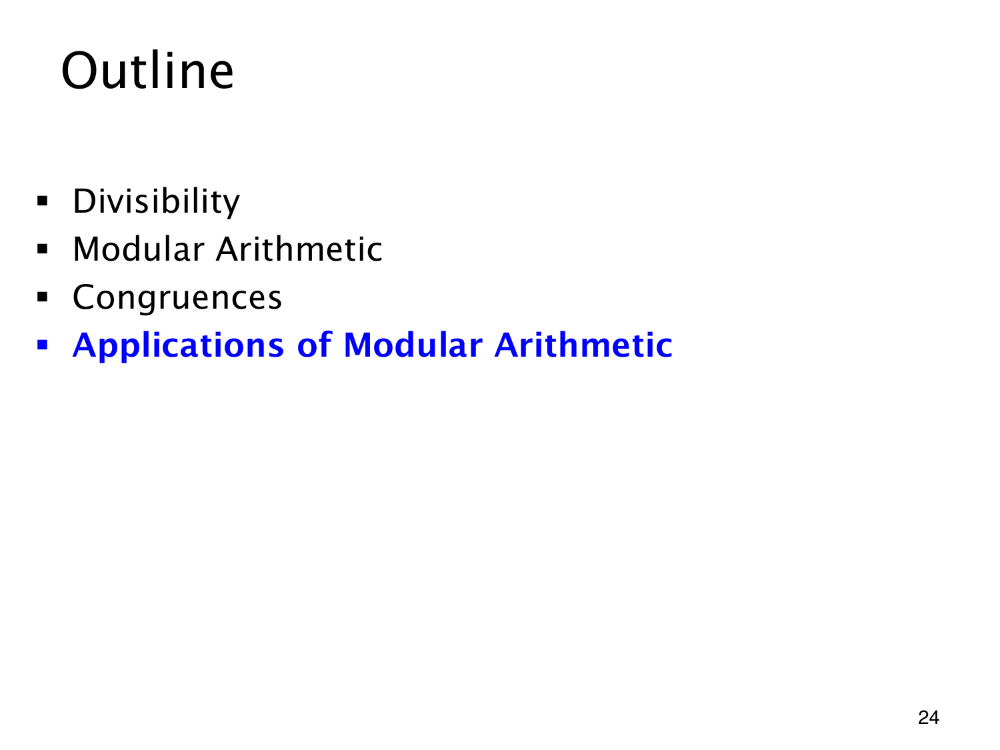

L1.12 · 第 24 页讲解原文
查看这一页课件

用余数处理实际问题
蓝色的 Applications of Modular Arithmetic 标出最后一部分。这是一张转场目录页，尚未给出新的应用公式。
可用的工具已经齐备：整除描述整数倍，带余除法给出唯一标准余数，加法与乘法允许先取余，同余又允许替换复杂整数。大整数问题由此能缩成有限种余数情况。
接下来看应用时，先弄清模数是什么、各个整数代表什么，再找所用的运算规则。公式要连同取模范围和实际问题一起理解，单记计算形式容易漏掉条件。